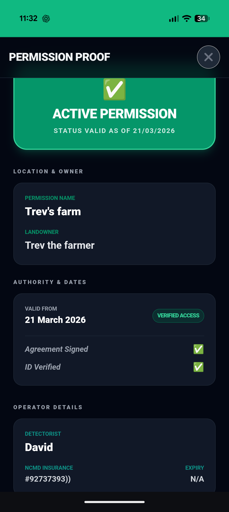
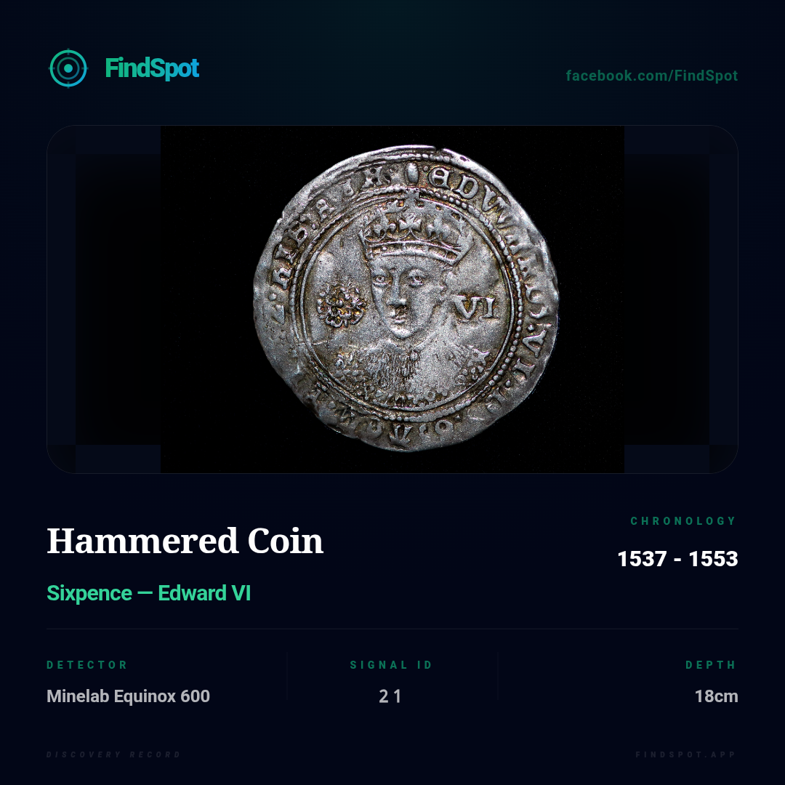

Most detectorists walk straight past history.
FindSpot shows you where it is. Find hidden features. Record like a professional. Prove your permission. All in one powerful, private, field-ready app.

Most detectorists search the wrong parts of a field.
Finds aren’t random.
They sit where people moved:
- • Near water
- • Along routes
- • On slight rises
If you can’t see that… you’re missing them.
Stop guessing.
Start knowing.
You don’t need luck to find good ground. You need the right tools.
FindSpot combines terrain analysis, historic data, and real-world detecting workflows to show you what others miss — before you even step into the field.
See what’s hidden before you swing
FieldGuide shows you where people were — before you start detecting.
It highlights movement routes, crossing points, and settlement edges. This is where things get dropped. This is where you start.
-
See hidden features See hidden features in the ground — even when nothing is visible on the surface.
-
Confirm what you’re seeing Confirm what you’re seeing using historic data and known sites.
-
Know where to detect Identify settlement edges and high-potential "human activity zones" using multi-source consensus.
Simple in the field.
Powerful when you need it.
Start in seconds. Master it as you go.
Load your permission
Set your field boundaries — you’re ready to go.
Scan the ground
See hidden features before you start.
Tap to record
Log finds instantly as you detect.
Fill in later
Add details when you're home, not in the mud.
That’s it.
Built for real detecting, not desk theory
No signal? No problem. Mud, rain, gloves on? Still works.
-
Detect Now, Detail Later One-tap Quick Find recording. Log the GPS instantly, detail the material and period later when you're home.
-
Gap Analysis Track exactly where you’ve walked and see where you’ve missed with real-time coverage calculations.
-
Fully Offline Works deep in the valley with zero signal. All maps and features are available field-side.


Ever been challenged on a field?
So have we. That’s why FindSpot includes built-in digital proof of permission and professional agreements.
-
14-Point Professional Agreements Generate full legal agreements with dual signature capture directly on your phone.
-
Instant "Digital Proof" Mode A professional, full-screen authority certificate ready to show anyone who asks.
-
Professional Reports Proper documentation ready for historic records or museums, ensuring you look like the expert you are.
Your finds deserve better than a notebook
Turn every find into a proper record — not just a photo.

-
Full Archaeological Data Location, depth, material, and period logged precisely.
-
Detector Metrics Log your Target ID and signal profile for every discovery.
-
Museum Graphics Generate obsidian-style cards for social sharing in one tap.
Replace your notebook, maps, and guesswork — with one app.
Your data stays yours. Always.
FindSpot is built differently. We don't want your secrets.
-
100% Local-First Everything is stored on your device's own internal database.
-
No Forced Uploads We never see your find spots. No servers. No "Syncing".
-
No Tracking No analytics on your locations. Your permissions are your own.
-
Total Control Export your data via CSV or JSON whenever you want.
Most people rely on luck.
You don’t have to.